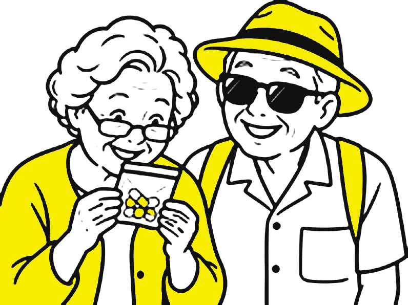
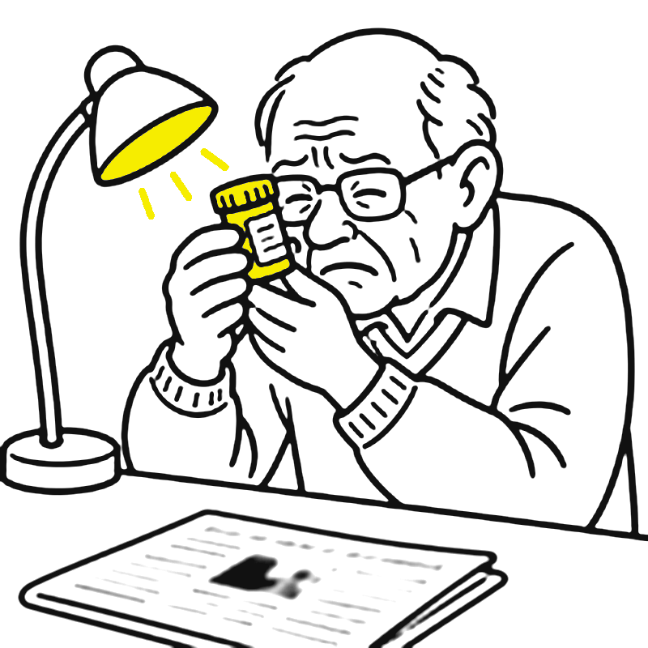
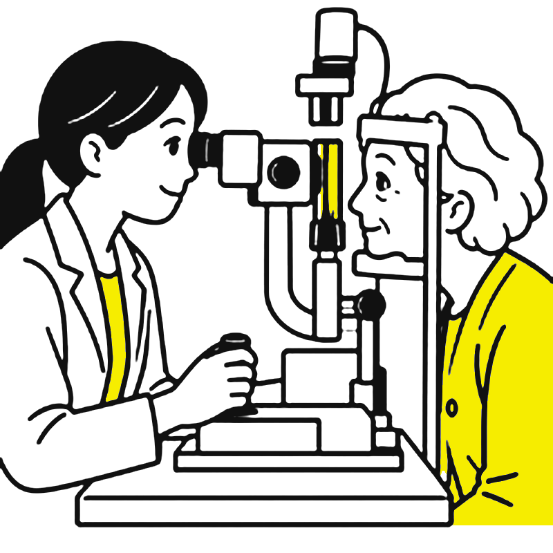
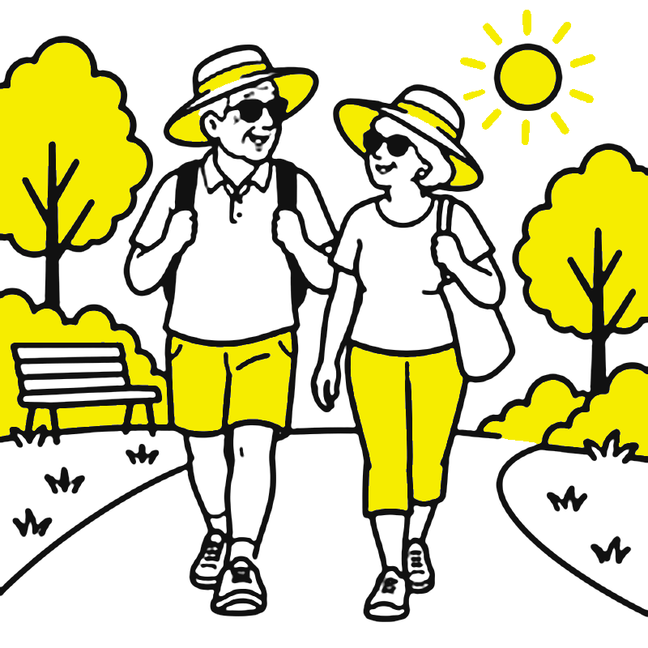
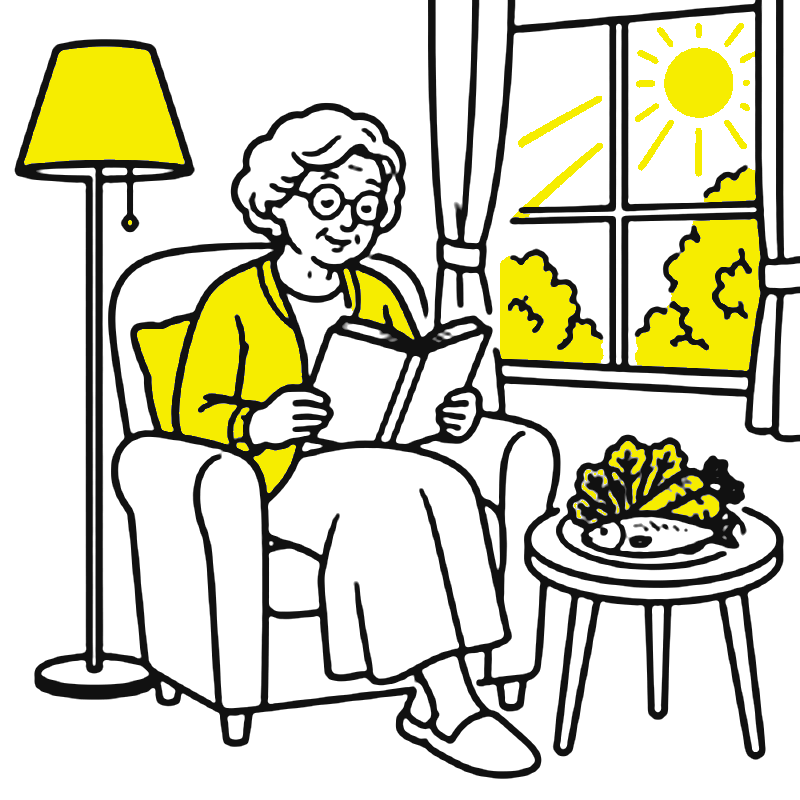

視力對長者有多重要？眼睛出問題時怎麼知道、怎麼觀察？多久要看一次醫生？今天用一堂課，把預防保健與可用資源一次說清楚。


看不清楚階梯邊緣、地上的東西、深淺差異，跌倒風險明顯增加；研究顯示視力差的長者跌倒機率約為一般人的 1.7 倍以上。
2024 年《刺胳針》失智委員會把「未矯正的視力損失」列入 14 項可改變的風險因子，約占可預防病例的 2%。
看不清楚就不敢出門、不再看書追劇、少和人互動；視力功能喪失者出現憂鬱的比例約為沒有的人的 2 倍。
藥袋上的字看不清楚、分不出藥丸顏色；煮飯、付錢、看時間、搭公車都變得吃力。
資料來源：Lord & Dayhew, J Am Geriatr Soc 2001（DOI 10.1046/j.1532-5415.2001.49107.x）；Livingston et al., Lancet 2024（DOI 10.1016/S0140-6736(24)01296-0）；Zhang et al., JAMA Ophthalmol 2013（DOI 10.1001/jamaophthalmol.2013.2597）。
全球至少
有視力障礙；其中至少 10 億人的視力問題「本可預防，或還沒有被處理」。最常見的原因是沒配眼鏡（屈光不正）與白內障。
WHO《World report on vision》2019
新北市 2025 年
在 29 區衛生所完成 ICOPE 長者功能評估，最常見的異常項目就是「視力」。看不清楚的人，比我們想像的多。
新北市衛生局新聞稿（2026）
台灣白內障就醫人數
其中 60 歲以上約占八成。白內障可以手術處理，拖著不處理反而影響生活與安全。
媒體引述國民健康署資料（2025 年 5 月）
重點不是嚇大家，而是：看不清楚不是「老了就這樣」，很多都有辦法。
點一下按鈕，看看同一座公園在不同眼睛裡的樣子（示意）。
內容依課程講義「眼睛顧好不吃虧」整理；畫面為示意，實際症狀因人而異。
紅框項目屬於「立刻就醫」警訊。此清單為衛教提醒，不能取代眼科檢查。
輪流遮住一眼，看同一個東西（月曆、時鐘）。兩眼差很多，或某一眼模糊、有黑影，就要檢查。很多人單眼出問題多年都沒發現。
作業單上的阿姆斯勒方格表，30 公分、一次一眼。線條彎、斷、缺、糊都是異常（下一頁示範）。
戴著平常的眼鏡，在平常的光線下讀藥袋。要拿到很遠、或讀錯字，就是該檢查、該配鏡的時候。
55 歲以上、糖尿病、高度近視、抽菸者更要常做。有異常或和上次不一樣，請盡快到眼科；就算正常，也要每年散瞳檢查眼底。
單眼或雙眼，幾分鐘到幾小時內變差，就算後來恢復也要就醫。
像有布幕從旁邊拉過來，可能是視網膜剝離。
眼睛紅、看燈有彩虹圈，可能是急性青光眼，會在短時間傷害視神經。
先用大量清水沖洗 15 分鐘，立刻就醫；不要揉、不要自己拔異物。
可能是中風徵兆，打 119。

| 我是…… | 建議頻率 |
|---|---|
| 65 歲以上，沒有特別症狀或風險 | 每 1～2 年 完整眼科檢查（視力、眼壓、散瞳看眼底） |
| 40 歲以上 | 每年 量眼壓，早期發現青光眼 |
| 糖尿病 | 每年 散瞳眼底檢查（健保糖尿病照護品質指標）；已有病變依醫囑更密 |
| 高度近視、青光眼或黃斑部病變家族史、曾有眼疾、長期用類固醇 | 每年或依醫囑 |
| 已經有症狀或自我檢查異常 | 不要等 盡快掛眼科 |
依美國眼科醫學會成人眼科檢查指引（AAO PPP 2020，DOI 10.1016/j.ophtha.2020.10.024；2026 更新維持相同間隔）、健保署糖尿病醫療給付改善方案品質指標、課程講義整理。實際頻率請依眼科醫師建議。
看書、追劇、滑手機每 30 分鐘，看看遠方或閉眼休息。
紫外線會讓白內障、黃斑部病變提早報到。
手不碰眼睛；不舒服找醫師，不要自己買藥水亂點。
看書、走路燈要亮；晚上起床先開小夜燈。
請醫師散瞳檢查眼底；把檢查日期寫在月曆上。
按時量、按時吃藥、少油少鹽少糖；戒菸對眼睛也是大好事。
與課程作業單「每天護眼任務」相同，這週每天打勾！


深綠色蔬菜（菠菜、地瓜葉）、黃橘色蔬果（南瓜、胡蘿蔔、木瓜）、魚與堅果，是黃斑部需要的營養；均衡飲食比保健食品重要，想吃營養品先問醫師或藥師。
客廳、走道、樓梯、浴室都要亮；閱讀用檯燈從側後方照；夜間動線裝感應小夜燈；窗簾避免強烈逆光眩光。
樓梯邊緣貼對比色防滑條、電燈開關用深色底板、常用物品固定位置；藥盒用大字分裝；準備放大鏡、大字體手機與電視遙控器。
65 歲以上可做 ICOPE 長者功能評估，項目包含視力；篩檢異常會轉介眼科。各縣市衛生所亦有長者健康檢查，請洽詢當年度方案。
眼科門診、眼壓、眼底檢查都有健保；白內障手術與基本款人工水晶體健保給付（功能性水晶體需自付差額）；糖尿病友每年眼底檢查是健保照護指標。
度數要驗光，不要借別人的戴。部分縣市曾有長者配鏡協助，但依當年度公告辦理（新北市自 113 年度起已停辦），請向衛生所或社會局確認最新方案。
視力矯正後仍看不清楚，可到低視能中心評估（如愛盲基金會低視能中心、各地低視能重建服務中心）。符合身心障礙資格者，各縣市輔具資源中心可協助放大鏡、擴視機等輔具補助。
視力退化已影響吃飯、走路、外出等日常生活時，可撥 1966 詢問長照服務與居家安全環境改善。
國民健康署「健康九九＋」網站、各醫院眼科衛教單張、中華民國眼科醫學會。網路偏方與來路不明的眼藥水，請先問醫師。
資源內容整理自新北市衛生局、衛生福利部與各機構公開資訊（2026 年 11 月）；方案與補助年年調整，請以各單位最新公告為準。
小叮嚀
本簡報為健康教育內容，不能取代眼科醫師的檢查與診斷。突然看不清楚、閃光或黑影變多、劇烈眼痛，請立刻就醫。
插圖以 AI 工具產生線稿後編修；簡報程式與互動遊戲「護眼同樂會」採 MIT 授權，歡迎社區據點自由使用。